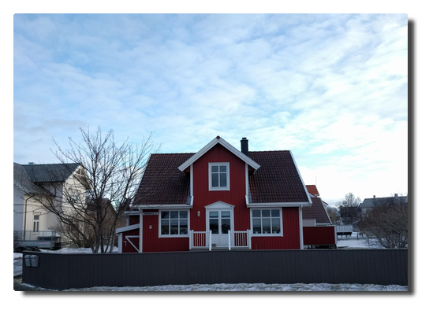

Love Boat - The Real Story. Bodø
Day 5. Land in sight
The day starts with an early workout. When the ship is close to the second harbour Bodø we are presented with a breathtaking panorama view. This day promises to become great.
 |
|---|
| Postcard motif |
After the last, turbulent night the passengers cannot wait to leave the boat. Excursion busses are standing right in front of the ship and our little tourist party prepares for the usual walk into the town.
We were "warned" in advance by other passengers that Bodø is such an ugly town. The cause of that condition is their almost complete destruction in an air strike by the German Luftwaffe in 1940. Many houses have been replaced by more untraditional buildings and therefore the central pedrestrian area looks similar to their German counterparts.
In a travel report I read afterwards the author was downright outraged to have been forced to stop at this unsightly place. This really has made me angry: so do you want to experience the country or not? Norway like the rest of the world is no fairyland and has more to offer than beautiful landscapes and overpriced sledge dog trips for tourists.
If you open your eyes a little you can discover interesting sites even in Bodø like the local pieces of streetart.
 |
|---|
| Streetart: "Malstrøm" by David de la Mano |
On our exploratory walk I spot a supermarket - it's time to prove my Norwegian language skills and buy some local specialities: brunost (brown cheese) and lefsegodt (soft pastry with a kind of cream cheese).
 |
|---|
| A German walks by a Norwegian kiosk. Hitler. ROFL. (slightly out of focus) |
In the afternoon I go for a walk again, enjoy the unbeknown surroundings just to be back on board in time for dinner.
|  |
|---|
| Pretty corners in Bodø |
Cast off, we are sailing north!
Anke's anecdotic tip
I love walking around but from the third day on I missed riding my bike. It somehow crossed my mind: You should have taken a folding bike with you. Each passenger can check in with two large pieces of luggage. If you get along with one like me it should not be problematic to take an adequately packaged folding bike (± 12 kg) on the trip. That would significantly increase the range of motion on land.
The night of nights
The evening starts quiet. This will change within a short period of time. Since experiencing the difficult weather conditions on the second day we have become addicted to the ship's own local web page - the bord portal - where you get information about speed, course, weather conditions and everything that happens on the ship. We are well-informed.
K. is stunned: she spotted green haze on the picture of the bow cam. M. is sent upstairs to evaluate the situation. I'm still doubtful but about to wrap up warm. We enter deck 11 which is already slightly crowded with some people and their expensive photo equipments. The sky is cloudy and the almost full moon is illuminating the ocean's surface and land masses of the Lofoten islands. This alone creates a breathtaking, mystical atmosphere.
People whisper and watch on each other's camera displays and suddenly somebody says "There it is." We stare into the sky and see: nothing.
We keep staring and start seeing the difference between clouds illuminated by the moon and diffuse haze. Yes, the hazes are greenish and slightly moving. So this should be it?
We remain outside in this winter night staring into the night sky. The clouds slowly dissolve. The weather forecast predicts lots of clouds and rain for the next days and somebody says "Tonight's the night of nights."
Deck 11 has awoken. The news of polar lights sightings are transmitted into steel Moby Dick. There is lively movement of people going in and out.
Tonight the sky is giving us the green light. Freezing and excitement - the loyal companions of the northern lights - stay with us until 2 o'clock in the morning.
What a great day.